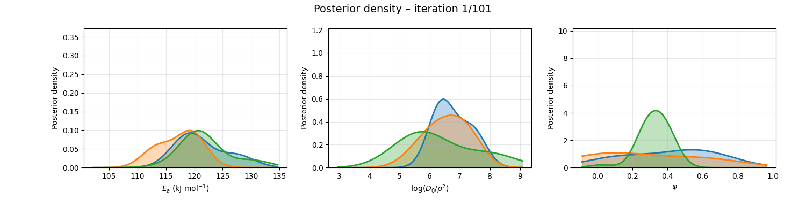

challenging the geologists' cold mars history with bayesian diffusion models
Rocks tell us one story. Cameras tell us another. The disagreement may live inside a two-spike model of how argon escapes a crystal.
two stories about mars


{kind=link}
The surface looks water-worked. Canyons branch like drainage networks. Pebbles are rounded as if they once tumbled through a vigorous stream.
But argon trapped in Martian meteorites has been read as a much colder record. In 2005, David Shuster and Benjamin Weiss argued that the nakhlites had not spent long stretches above freezing during roughly the last billion years.
Rocks are not liars. But their story has been misinterpreted by geologists.
how a rock remembers heat
Potassium-40 decays into argon-40. Cold feldspar holds that argon inside its lattice; heat gives it enough mobility to diffuse out. An argon date is therefore also a record of what temperatures the mineral survived.
A grain is not one perfect container. The multi-domain diffusion model treats it as many diffusion domains: small domains empty at lower temperatures; large domains retain argon longer. A step-heating experiment releases those domains in sequence.
the two-spike model
Shuster and Weiss represented the distribution with two domains: a low-retentivity domain and a high-retentivity domain. In distribution language, this is two spikes. It was a reasonable compression for its time. It is also a strong assumption.
letting the uncertainty move
Bayes' rule turns every plausible domain distribution into a candidate explanation. The MDD simulator predicts an argon-release curve; candidates that reproduce the experiment receive more posterior weight.
watching the posterior form
As the sampler advances, probability moves across activation energies, diffusion lengths, and volume fractions. What looked like two known domain sizes becomes a family of possible internal structures.

a warmer history is still in the posterior
The final test asks for the warmest 100-million-year episode consistent with the retained argon. Unlike the two-domain point estimate, the preliminary Bayesian interval reaches across the freezing point.
This does not prove that Mars stayed warm. It says the rock does not exclude a long warm episode as confidently as the two-spike interpretation suggested.